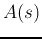
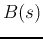
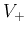

An osillator is typically formed by an amplifier with gain  and
a feedback branch of gain . The open-loop gain is
The op-amp circuit shown in the figure has both positive and negative
feedback branches. If the voltage to non-inverting input  is
considered as the input, the circuit is a non-inverting amplifier
with gain: